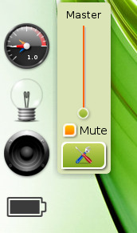
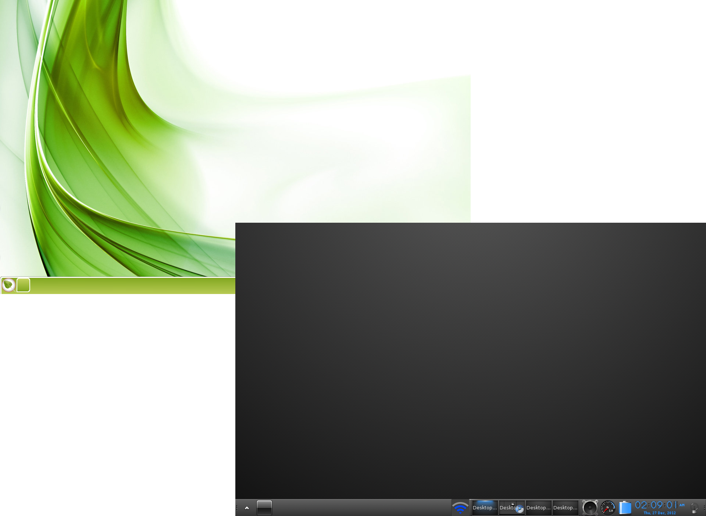

[clique em qualquer imagem para aumentar]
{kind=link}
Área de trabalho - Organize as suas tarefas
Dependendo do Perfil actual, seleccionado durante o setup inicial, pode ter ou não um Gadget Paginador na sua área de trabalho. Independentemente disso, você ainda pode ter áreas de trabalho virtuais. As áreas de trabalho virtuais podem ser úteis para a sua organização pois permitem manter os aplicativos de um certo tipo agrupados numa área de trabalho e os de outro tipo numa área de trabalho separada.
O ícone opaco no ambiente de trabalho é uma representação de todas as áreas de trabalho disponíveis, e cada uma terá um pequeno ícone que indica as aplicações em uso.
Existem vários modos de mudar entre elas:
- Se você tem um gadget Paginador basta clicar sobre o ícone da área de trabalho para a qual deseja mudar.
- Use o atalho de teclas: Ctrl+Alt+ ">" ou "<"> para se mover na direcção pretendida.
- Escolha a área de trabalho pretendida via Principal>Área de trabalho>Virtual.

Toda a área de trabalho é um Menu
Clique com o botão esquerdo do rato em qualquer espaço vazio da área de trabalho e fará com que o menu Principal apareça, onde você pode lançar aplicações, ajustar as configurações, desligar o sistema, e assim por diante. Este é o padrão numa instalação Bodhi Linux de raiz. A maioria considera que é muito conveniente. Para os poucos que não gostam do clique atribuído para mostrar o menu Principal, este pode ser facilmente removido / configurado em: Principal>Definições>Tudo>Entrada>Associação do rato, assim como outras configurações do rato.
Clicando com o botão direito do rato em qualquer espaço vazio da área de trabalho fará com que apareça o menu Favoritos, que está vazio numa instalação de raiz. Este menu aguarda, com expectativa, as aplicações que lhe serão atribuidas por você.

{kind=link}
Muitos Gadgets mostram informações do sistema
Muitos Gadgets são itens que mostram alguma informação do sistema como o nível de bateria, a hora/data, etc. Os Gadgets também permitem a sua interacção com o sistema como, por exemplo, ajustar o volume do som. Existem muitos Gadgets que dispõem de uma imensa variedade de funções. Alguns suportam multiplas instâncias o que permite que sejam colocados em diferentes locais como Painéis instances at one time, allowing you to place them in different locations (ver a secção Painéis) ou directamente na área de trabalho.
Eles podem ser encontrados e adicionados à área de trabalho via:
Principal>Área de trabalho>Alterar gadgets (método simples)
e
Principal>Definições>Gadgets (método avançado)
{kind=link}
Controla o Módulo; Disponibiliza o Gadget!
Determinado Gadget só está disponível quando o respectivo Módulo foi carregado. De um modo simples, os Gadgets são instantes de Módulos em utilização. O Bodhi Linux trás, por defeito, uma variedade de Módulos mas mais Módulos podem ser instalados à sua vontade através do Bodhi AppCenter ou do Synaptic.
Os Módulos podem ser carregados/descarregados através de Principal>Definições>Módulos.

{kind=link}
Temas para o seu Estilo
O Bodhi Linux trás vários Temas para a sua escolha.
Você pode escolher o seu preferido através de Principal>Definições>Temas. Os nossos Artistas criaram mais temas e papéis de parede, que podem ser vistos e descarregados através da nossa página web Bodhi Art.
(see: Recursos)
Você também pode descarregar temas através da aplicação "Synaptic Package Manager", localizada em Principal>Definições>Preferências>Gestor de Pacotes Synaptic, através de uma pesqisa rápida por "bodhi theme". Se preferir pode selecionar o pacote "bodhi-theme-pack" para instalar todos os temas disponíveis nos Repositórios do Bodhi Linux. Pense nas escolhas! Nas possibilidades!!
Perfis - Uma Inovação do Bodhi Linux
O Bodhi Linux disponibiliza um conjunto dos Perfis mais comuns que você pode escolher quando da instalação. Os Perfis gerem o layout da sua área de trabalho e as instâncias dos Gadgets. Eles servem como layout base da área de trabalho, com Gadgets habilitados em função da classificação do Perfil escolhido (ex. Perfil Laptop mostra o Gadget Bateria, o Perfil Desktop não) ou do modo de utilização do seu computador. Existe também um Perfil baseado em "Brilhos e Luzes", e um Perfil especificamente desenvolvido para tablets e equipamentos de ecran táctil. Você pode modificá-los ao seu gosto com Gadgets adicionais e redefini-los, criando o seu próprio Perfil!
Através de Principal>Definições>Tudo>Definições>Perfis, você pode mudar entre Perfis, assim como guardar o seu Perfil modificado.
Painéis - O Lar, Doce Lar da barra de tarefas/indicador do sistema/acoplador
O E17 disponibiliza Painéis para gerir os Gadgets e os Lançadores, se preferir não os ter na área de trabalho. A maioria dos Gadgets, que têem o respectivo Módulo carregado, pode ser adicionados a um Painel. Pode ainda ter múltiplos Painéis em qualquer local da margem da sua área de trabalho. A gestão do número de Painéis e a sua localização/tamanho/size (entre outros atributos) é efectuada através de Principal>Definições>Painéis. Para gerir o conteúdo (i.e. gadgets) de um Painel, clique com o botão direito do rato num Painel e selecione Conteúdo.
{kind=link}
{kind=link}
Enrolar - uma alternativa a Minimizar
Quer uma janela fora do caminho mas não quer minimizá-la para a barra de tarefas? Então vamos Enrolá-la! Clique 2 vezes com o botão esquerdo do rato na barra de titulo de qualquer janela para "enrolar", e clique outras 2 vezes com o botão esquerdo do rato na barra de titulo para "desenrolar".
O screenshot mostra 2 instantes do LXTerminal, um em que está "Enrolado" e outro em que não está. LXTerminal é, actualmente, o terminal por defeito no Bodhi Linux.
Alguns Atalhos Importantes:
Atalhos são referenciados no e17 como Associações e são catalogados pela sua entrada. São, como se segue:- Associação das margens (margens do ercran)
- Associação do teclado (teclado)
- Associação do rato (rato+botão)
- Associação ACPI (eventos)
Alt+<clique esquerdo> (rato)
permite selecionar qualquer parte da janela para agarrá-la e reposicioná-la
<clique esquerdo> (rato)
numa parte visível na área de trabalho, abre o menu Principal
<clique direito> (mouse)
numa parte visível da área de trabalho, abre o menu Favoritos
Ctrl+Alt+X (tecla)
fecha a janela
Ctrl+Alt+ ">" ou "<"> (tecla)
muda para a área de trabalho seguinte na direcção selecionada
Ctrl+Alt+M (tecla)
abre o menu Principal
Shift+F10 (tecla)
maximiza verticalmente a janela
Alt+Shift+F10 (tecla)
maximiza horizontalmente a janela
Alt+Tab (tecla)
muda entre janelas na mesma área de trabalho
Todas as associações estão localizadas e podem ser configuradas em:
Principal>Definições>Tudo>Entrada
*Nota: Para mais informações sobre as associações, clique aqui.
Guia Bodhi do Enlightenment
Para uma maior compreensão na utilização e customização do E17, criámos o "Guia Bodhi do Enlightenment". Depois da versão 1.2.0 do Bodhi Linux, o guia é instalado localmente como um documento HTML em:file:///usr/share/bodhi/e17guide